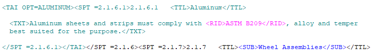

| TAGS |
<TAI> </TAI> |
| DESCRIPTION |
This tag identifies Tailoring Options that may be removed from the specification by enabling the exclusion of selected text across a Job or Section, simplifying the editing process. Tailoring surrounded by the TAI tags will appear teal when viewing colors. |
| SOURCE |
Insert menu > Tailoring |
| RULES |
None |
| CHARACTER LIMITATIONS |
Sixty (60) Characters |
 Tailoring Options streamline specification editing by allowing editors to include or exclude information marked with Tailoring (TAI) tags by master technical experts. This is based on factors like Agency, project method, and materials, enabling efficient removal of irrelevant requirements without manual text editing.
Tailoring Options streamline specification editing by allowing editors to include or exclude information marked with Tailoring (TAI) tags by master technical experts. This is based on factors like Agency, project method, and materials, enabling efficient removal of irrelevant requirements without manual text editing.
Manage Tailoring Options
Tailoring can be managed from different locations within the SpecsIntact application. This multifaceted approach enhances workflow efficiency and empowers users to customize their projects based on their specific needs and preferences.
SpecsIntact Explorer
The SpecsIntact Explorer provides the capability to manage Tailoring Options for Jobs and Sections. To manage Tailoring from the SpecsIntact Explorer, refer to the File menu > Tailor or the Sections menu > Tailor topics.
SI Editor
The SI Editor provides the capability to create and manage Tailoring Options.
- To add Tailoring Options, refer to the Insert menu > Tailoring topic.
- To manage existing Tailoring Options, refer to the View menu > Tailoring Options topic.
| Insert Tailoring Options | View Tailoring Options |
 |
 |
 To learn more about inserting tags, refer to the Insert Tags topic.
To learn more about inserting tags, refer to the Insert Tags topic.
Example
 Illustrated below is a Tailoring Option, with tags visible:
Illustrated below is a Tailoring Option, with tags visible:

Additional Learning Tools
 Watch the Inserting and Managing Tailoring Options eLearning module within Chapter 7 - Master Preparation.
Watch the Inserting and Managing Tailoring Options eLearning module within Chapter 7 - Master Preparation.